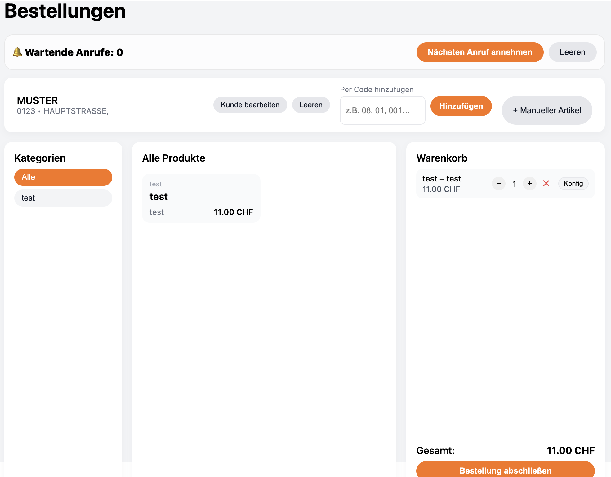
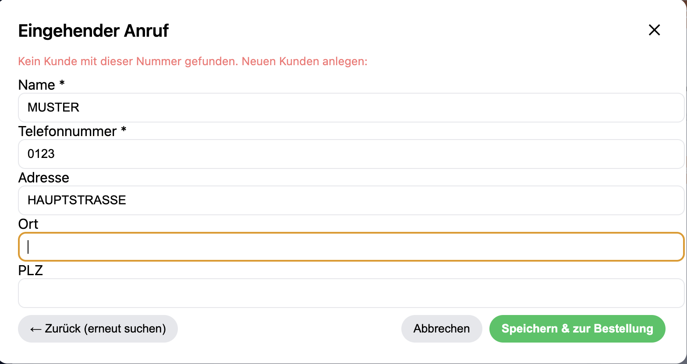
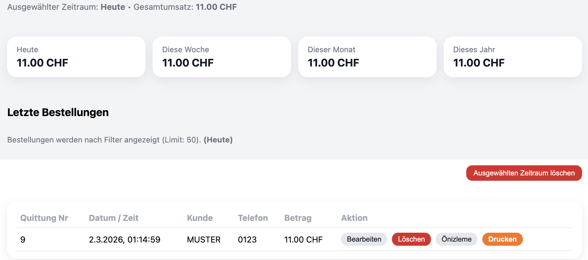
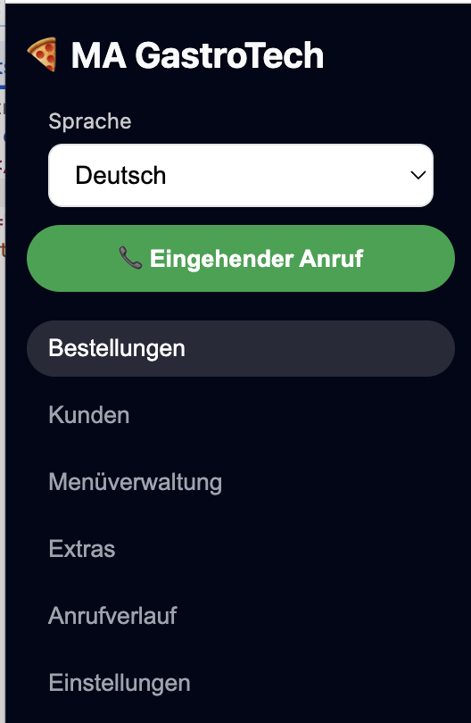

Telefonbestellungen in Sekunden – ohne Chaos
MA GastroTech erkennt Kunden per Telefonnummer, unterstützt Stoßzeiten mit Call Queue, verwaltet Produkte/Extras, druckt Belege und zeigt Umsätze übersichtlich an.

Entwickelt für echte Telefonprozesse: kurze Wege, klare Buttons, schneller Abschluss.
Läuft auf jedem normalen Windows-PC. Sie brauchen keine spezielle Kassen-Hardware.
Daten bleiben lokal im Restaurant. Backups/Export möglich – Sie behalten die Kontrolle.
Screenshots
Einblicke in die wichtigsten Bereiche.



Funktionen
Alles, was ein Telefon-Restaurant braucht – ohne unnötigen Ballast. Fokus auf Geschwindigkeit und Übersicht.
Telefonnummer → Kundendaten automatisch laden oder neu anlegen. Keine doppelte Arbeit.
Warteliste für Stoßzeiten: Anrufe sammeln, nacheinander bearbeiten, kein Kundenwechsel-Chaos.
Quittung/Küchenbon direkt drucken. Mehrere Drucker/Stationen je nach Workflow möglich.
Extras, Varianten und Notizen direkt im Warenkorb bearbeiten – schnell während dem Telefonat.
Bestellverlauf und Umsatzübersicht nach Zeitraum. Schnelle Kontrolle ohne Excel.
Deutsch/Türkisch (erweiterbar). Ideal, wenn Team mehrsprachig arbeitet.
MA GastroTech ist eine Desktop-Lösung und kann auf einem vorhandenen Windows-PC installiert werden. Sie benötigen keinen speziellen POS-Terminal. Wenn Sie bereits einen PC und einen Drucker haben, kann das reichen.
- ✅ Windows-PC (vorhanden)
- ✅ Optional: Drucker (Kasse/Küche)
- ✅ Optional: VoIP/SIP Setup (abhängig vom Telefonanbieter)
Installieren → Telefonworkflow schneller machen → weniger Fehler → mehr Überblick.
So funktioniert MA GastroTech
Vom Anruf bis zum Druck – ein klarer Ablauf, optimiert für Geschwindigkeit.
Bei einem VoIP/SIP-Setup kann die Telefonnummer automatisch erkannt und an die Oberfläche übergeben werden.
Existiert die Nummer bereits, erscheinen Name/Adresse/PLZ sofort. Wenn nicht, legen Sie den Kunden in Sekunden an.
Produkte & Extras → Bestellung abschließen → Quittung/Küchenbon drucken. Alles bleibt im Verlauf & in der Umsatzübersicht.
VoIP/SIP (optional)
Wenn Ihr Restaurant über VoIP telefoniert, kann die Anrufernummer automatisch erkannt werden. Das spart Zeit und reduziert Fehler bei der Kundensuche.
- ✅ Eingehende Nummer übernehmen
- ✅ Nummern-Format normalisieren (z.B. +41 → 0…)
- ✅ Anrufhistorie (wer hat wann angerufen)
- ✅ Call Queue für Stoßzeiten
Hinweis: VoIP/SIP Integration hängt vom Setup ab. Das System läuft auch ohne Telefonintegration – dann wird die Nummer manuell erfasst.
Stabiler Betrieb (Windows)
Die App läuft lokal. Das bedeutet: schnelle Reaktionen, keine Abhängigkeit von Cloud, ideal für Restaurants, die einfach arbeiten wollen.
- ✅ Installation auf vorhandenem Windows-PC
- ✅ Lokale Datenbank (schnell, offline-tauglich)
- ✅ Optional: Drucker-Setups für Küche/Kasse
- ✅ Backups/Export möglich
Alte Kunden nicht verlieren
Viele Restaurants wechseln ungern das System, weil sie Angst haben ihre Kundendaten zu verlieren. Bei MA GastroTech ist genau das ein Fokus: Ihre bestehenden Kunden können übernommen werden.
Wenn Sie bereits eine Kundenliste haben (z.B. Excel/CSV), übernehmen wir Name, Telefonnummer, Adresse, PLZ und Notizen.
Die Daten bleiben lokal im Restaurant. Keine Cloud-Pflicht, kein Vendor-Lock-in.
Auf Wunsch richten wir automatische Backups ein. Export ist möglich.
Typische Datenquellen
Wir können Daten aus verschiedenen Quellen übernehmen – schnell und pragmatisch.
Kundenliste aus Office/Google Sheets.
Wenn Ihr aktuelles System exportieren kann, übernehmen wir das Format.
Auch einfache Listen können wir strukturieren und importieren.
Vor der Übernahme prüfen wir kurz die Datenqualität (Telefonformat/PLZ). Danach ist alles sauber im System.
Vision
MA GastroTech soll eine der schnellsten Telefon-Bestelloberflächen für Restaurants werden: klare UI, lokale Kontrolle, starke Integrationen und ein Workflow, der im Alltag funktioniert.
Für wen ist das?
Schneller aufnehmen, weniger Stress, saubere Abläufe.
Ein reales Produkt mit echter Nutzung und Engineering-Tiefe.
Interessant für Druck-/VoIP-/IT-Partner im Gastro-Bereich.
Preise und Setup werden individuell per E-Mail geklärt, passend zu Ihrem Restaurant (Drucker/Telefon/Workflow).
Kontakt
Für eine Anfrage genügt eine kurze Nachricht mit Restaurantname, Stadt, ca. Bestellungen/Tag und Ihrem aktuellen Setup (Drucker/Telefon).
- • Haben Sie eine Kundenliste (Excel/CSV)?
- • Wollen Sie Küche & Kasse getrennt drucken?
- • Nutzen Sie VoIP/Internet-Telefonie?
Hinweis: Diese Website ist eine Produktübersicht. Details (Setup, Datenübernahme, Drucker) klären wir per E-Mail.